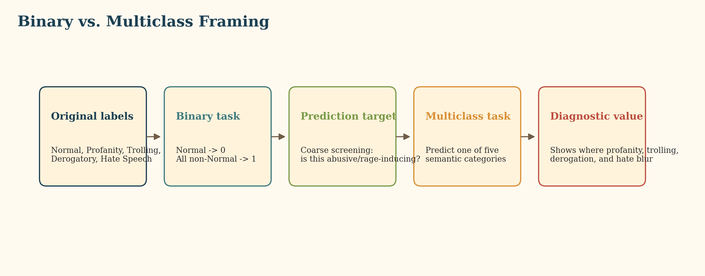
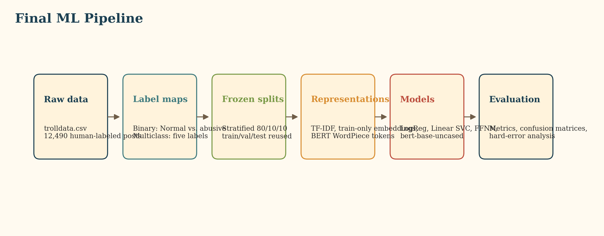
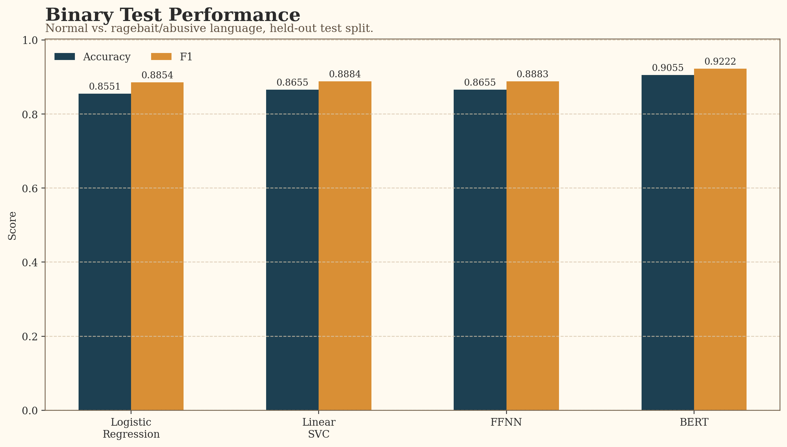
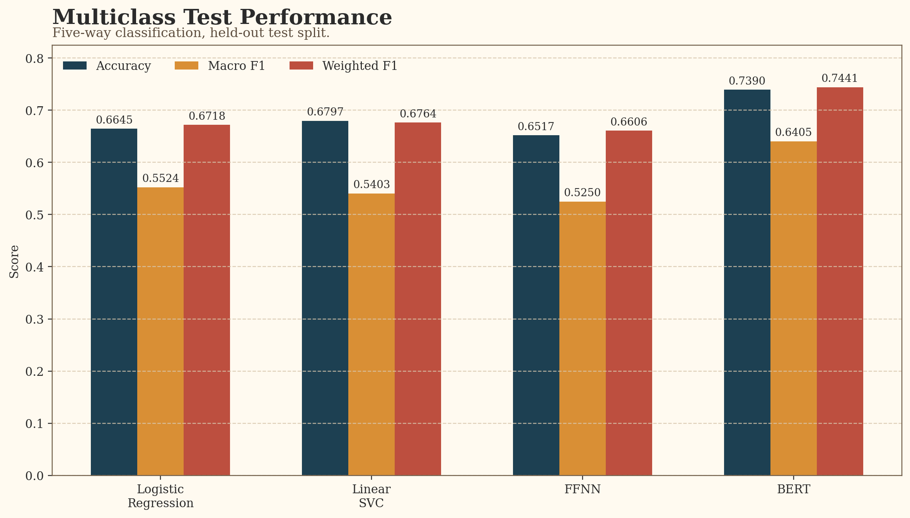
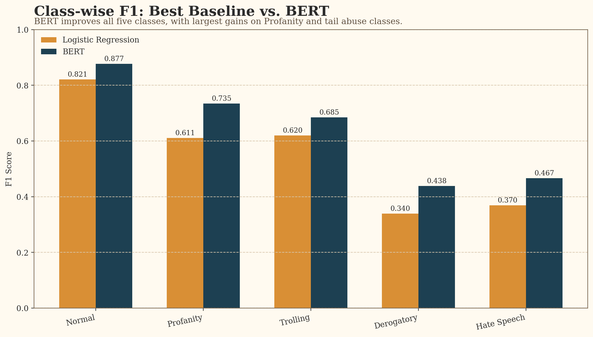
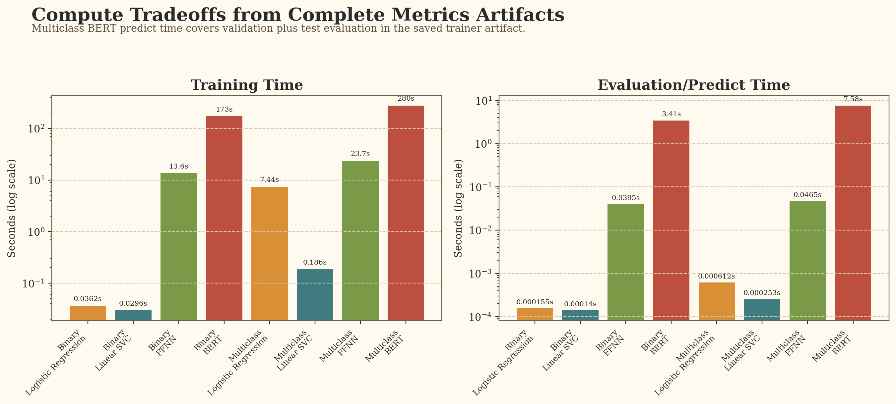

Ragebait Detection
From weak labels to a gold benchmark.
A reproducible ML study of normal, profane, trolling, derogatory, and hate-speech posts.
Held-out normal vs. abusive/ragebait detection.
Five-way BERT result on the harder label space.
Human-labeled posts in the final benchmark.
Problem
Ragebait rewards reaction volume.
The ML challenge is intent: not every angry post is bait, and not every profane post carries the same harm.
Inflammatory or bad-faith content is published.
Users reply, quote, argue, and amplify.
Platforms can interpret interaction as relevance.
Visibility increases and the incentive repeats.
Validity Pivot
Volume was not enough.
Iteration 1 proved the engineering stack. Iteration 2 changed what counted as ground truth.
Iteration 1
Qwen/vLLM binary labels; best tuned BERT macro F1 was 0.8735 against weak labels.
Pivot
High scores against model-generated labels do not establish human-grounded validity.
Iteration 2
Human labels, shared train/validation/test rows, and a model ladder from TF-IDF to BERT.
Gold Labels
Five labels, uneven support.
The corpus is smaller than the weak-label set, but it supports defensible evaluation.
| Label | Rows | Share |
|---|---|---|
| Normal | 5,053 | 40.46% |
| Profanity | 1,582 | 12.67% |
| Trolling | 4,537 | 36.33% |
| Derogatory | 862 | 6.90% |
| Hate Speech | 456 | 3.65% |
Binary vs. Multiclass
The same labels answer two different questions.

Binary
Predicts Normal vs. all non-Normal labels. Best for coarse screening; final BERT F1 is 0.9222.
Multiclass
Predicts Normal, Profanity, Trolling, Derogatory, or Hate Speech. More diagnostic; final BERT macro F1 is 0.6405.
Interpretation
The lower multiclass score reveals real semantic overlap rather than a failed experiment.
Splits and Preprocessing
One frozen split for every model.
Validation selects models and checkpoints; final claims use the held-out test split.
| Split | Rows | Normal | Abusive |
|---|---|---|---|
| Train | 9,992 | 4,042 | 5,950 |
| Validation | 1,249 | 506 | 743 |
| Test | 1,249 | 505 | 744 |
TF-IDF
1-2 grams, max features 20,000, min_df 2, max_df 0.95, sublinear TF.
FFNN tokens
Lowercase, train-only vocabulary, max length 64, final vocab size 10,975.
BERT tokens
bert-base-uncased tokenizer with max length 128 in the complete metrics run.
Representation Depth
Cheap lexical baselines before contextual modeling.
BERT has to beat strong baselines, not straw-man models.
Tier 1
Logistic Regression and Linear SVC over sparse TF-IDF n-grams.
Tier 2
FFNN with learned embeddings, mean pooling, hidden layers, ReLU, dropout.
Tier 3
BERT with contextual WordPiece representations and a classifier head.
Legacy Gaussian Naive Bayes and Decision Tree models were tested in Iteration 1, but they are archived weak-label baselines and not part of the final complete-metrics benchmark.
Reproducible Artifacts
The final package is auditable.
The completed CUDA run wrote JSON metrics, histories, prediction files, tokenizer snapshots, hard errors, and confusion matrices.

Optimization
BERT uses AdamW, weight decay groups, linear warmup/decay, gradient clipping, and AMP on CUDA.
Checkpointing
Binary BERT selects best validation F1; multiclass BERT selects best validation macro F1.
Imbalance
Multiclass class weights: Hate Speech 5.4751, Derogatory 2.8962, Profanity 1.5798.
Binary Results
BERT wins, but the baselines are strong.
Normal vs. ragebait/abusive language on the held-out test split.

| Model | Accuracy | Precision | Recall | F1 |
|---|---|---|---|---|
| Logistic Regression | 0.8551 | 0.8371 | 0.9395 | 0.8854 |
| Linear SVC | 0.8655 | 0.8780 | 0.8992 | 0.8884 |
| FFNN | 0.8655 | 0.8789 | 0.8978 | 0.8883 |
| BERT | 0.9055 | 0.9054 | 0.9395 | 0.9222 |
Confusion Matrix
High recall with a visible false-positive cost.
BERT correctly recovers 699 of 744 abusive test posts.
| BERT Test | Pred Normal | Pred Abusive |
|---|---|---|
| True Normal | 432 | 73 |
| True Abusive | 45 | 699 |
Most predicted abusive posts are correct.
Most actual abusive posts are found.
73 false positives and 45 false negatives on 1,249 test posts.
Multiclass Results
The five-class task shows BERT's value most clearly.
Macro F1 matters because Derogatory and Hate Speech are rare but important.

| Model | Accuracy | Micro F1 | Macro F1 | Weighted F1 |
|---|---|---|---|---|
| Logistic Regression | 0.6645 | 0.6645 | 0.5524 | 0.6718 |
| Linear SVC | 0.6797 | 0.6797 | 0.5403 | 0.6764 |
| FFNN | 0.6517 | 0.6517 | 0.5250 | 0.6606 |
| BERT | 0.7390 | 0.7390 | 0.6405 | 0.7441 |
Where It Breaks
Remaining errors are boundary errors.
The model's hardest cases are not random; they cluster around Trolling, Derogatory, Profanity, and Hate Speech.

Trolling -> Derogatory
Targeted hard-error cases where insult-heavy trolling looked like direct derogation.
Derogatory -> Trolling
Taunting style softened targeted abuse into trolling.
Hate -> Profanity
Explicit profanity masked more severe harmful intent.
Runtime
Quality costs compute.
TF-IDF models are nearly free; BERT is slower but practical with CUDA for offline or batch scoring.

Binary BERT
Test prediction: 3.411s.
Binary SVC
Test prediction: 0.00014s.
Multiclass BERT
Validation plus test prediction: 7.575s.
Multiclass FFNN
Test prediction: 0.0465s.
Caution
Do not confuse a classifier with a moderation policy.
The model helps triage content, but context, appeal, and human judgment remain necessary for high-impact decisions.
Context missing
Single posts lose reply-chain context, quotation, target identity, and community norms.
Split risk
Splits are stratified by label, not grouped by author or source.
Tail classes
The test split has only 86 Derogatory and 46 Hate Speech examples.
Fairness
False positives can suppress legitimate anger, satire, or marginalized speech.
Conclusion
Three findings and one next path.
Baselines matter. Linear TF-IDF models are strong and should not be skipped.
FFNN is limited. Mean-pooled embeddings add little on this dataset.
BERT is best. It improves aggregate scores and every class-wise F1.
Generalization. Test grouped author/source splits, richer context, and sharper boundary labels.
Sources and Artifacts
Final numbers come from the complete metrics package.
All reported metrics, charts, notes, and script values use the same CUDA metrics artifacts.
- Trawling for Trolling: A Dataset. arXiv:2008.00525, 2020.
- Devlin, Chang, Lee, and Toutanova. BERT. NAACL-HLT, 2019.
- Pedregosa et al. Scikit-learn: Machine Learning in Python. JMLR, 2011.
- aadyasingh55. Twitter Emotion Classification Dataset. Kaggle, 2023.
- irakozekelly. Misleading Posts Driving Discourse on X. Kaggle, 2023.
- speckledpingu. Raw Twitter Timelines w/ No Retweets. Kaggle, 2020.
- Project repository: github.com/giuseppegaliazzitx-bit/ML-Project-Ragebait.